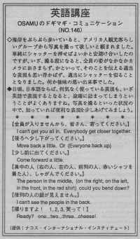

皆さん、寄ってください。
I can't get you all in. When Osamu and his wife were walking on the beach, an American tourist asked them to take a picture. Osamu thought he should just press the button so he agreed to do it. But when he took the picture, all of the people didn't fit inside. So he wanted to tell them but he couldn't so he just pressed the button. He felt bad.
海岸をぶらぶら歩いていると、アメリカ人観光客らしいグループから写真を撮って欲しいと頼まれました。単純にシャッターを押せばよいかと安請け合いしたのですが、いざ、撮る段になると、全員の姿がなかなかカメラにおさまらず、かといって、そのことを伝える適当な表現も思い浮かばず、適当にシャッターを切ることとなりました。何か後味の悪い出来事でした。
日頃、日本語ならば、何気なく使っている表現も、いざ英語で表現するとなると、途端に詰まってしまうということがありますね。写真を撮るといった状況の中で、知っていれば便利な表現を少しあげてみましょう。
全員が入りませんから、皆さん、寄ってください。
I can't get you all in. Everybody get closer together.
後ろへ少し下がってください。
Move back a little. Or (Everyone back up)
少し前に出てください。
Come forward a little.
真ん中の人（右の人、左の人、前列の人、赤いシャツを着た人）、しゃがんでください。
The person in the middle, (on the right, on the left, in the front, in the red shirt) could you bend down?
後列の人の顔が見えません。
I can't see the person in the back.
撮りますよ！ １、２、３、笑って！
Ready? one…two…three…cheese!

| © 1995-2013 NACOS International Institute. All Rights Reserved. |